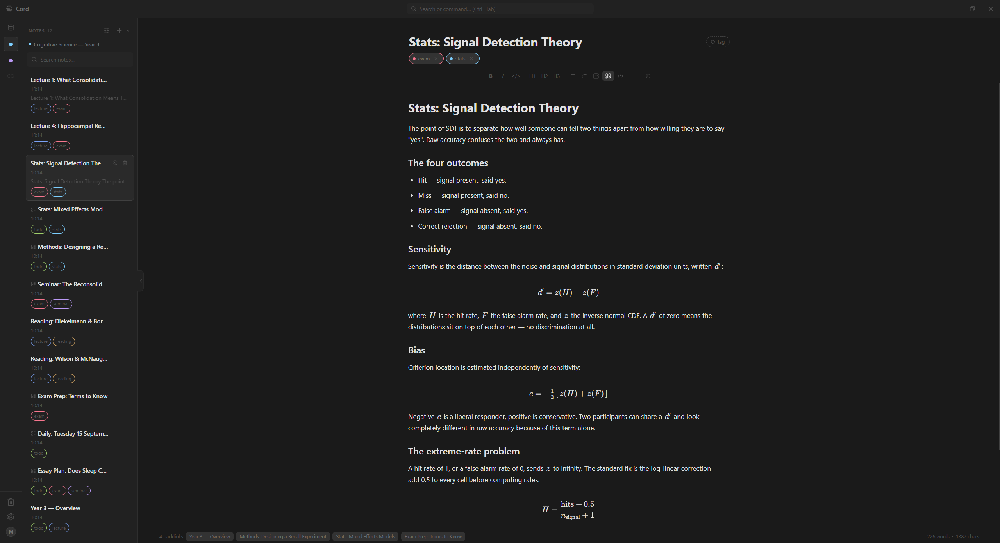

cord-note
Notes that know
how they connect.
Cord is a local-first desktop note-taking app. Vaults, notes, links and tags — a knowledge graph, not a filing cabinet. Your notes live in a SQLite database on your own machine. There is no account and nothing to sign in to.
Windows, macOS and Linux · AGPL-3.0
